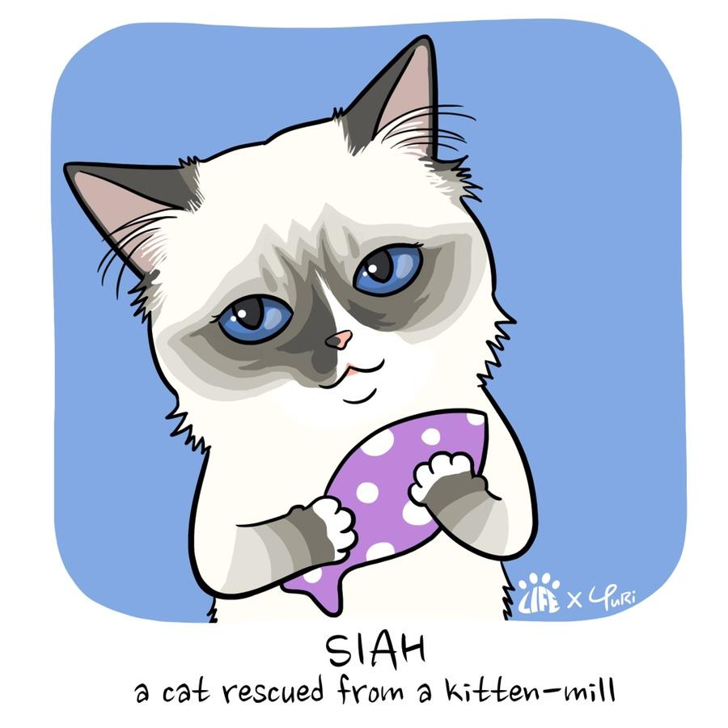

{Notice} Cats Are Sick 'Cat Factory Stop' Campaign
Registration Date Author Life Attachment Notice_and_press4_04.jpg{kind=link}
Animal Protection Group Life.
- Hello, this is the animal rights organization Life.
Life is based in Sui-per, Busan City last February
Illegal cat factory Busan City Hall,
Caught with the Swimming District Office etc.
There was a case where I filed a complaint with the police.
(https://www.news1.kr/articles/?3842849)
Through this incident, we are all around us.
There are facilities with unlicensed animal producers.
Above all, animals are mobilized to make money.
Being exposed to various diseases and causing
Animal cruelty is quite serious.
I learned the truth again.
The indiscriminate impasse of animal production is
It inevitably entails animal cruelty.
Illegal proceeds from animal cruelty
Again to abuse another animal
It is written in the process.
Now in our society, this cruelty
The loop must be broken.
In 2016, the whole country was inundated with anger.
Puppy factory incident, but now 4 years later
Still in the middle of a big city residential neighborhood
An illegal cat factory is in operation.
About the project
★1 What is a cat factory?
Lekdoll, American Shorthair, Scottish Fold,
Munchkin, Russian Blue, etc.
So lovely
The name of the cat species.
Everyone sees these cats.
You just can't hit or hit
It's cute, pretty and adorable.
Passing through the streets and meeting
Many animal dealerships,
And easy to see online
Online Animal Stores,
They are so pretty animals
Exhibit and entice consumers.
To escape that temptation is
It's so hard...
A stray cat on a side of the road
Crying densely
Construction workers discover
Hop on a car in Seoul
Brought to Busan.
And I left it to the veterinary clinic.
This is the story of the youngest 'spirit room' of the Life representative.
Seeing this pretty, cute, salty little life
'Where is your mother?',
'What do your brothers look like?' Say
I've asked a few times.
We are not in the middle of the road,
In an animal store full of colorful lights
Those animals you meet are
Where was he born?
How did you get there?
The moms and dads of those animals are
Where and what are you doing now?
★2 On February 13, 2020, a house in Guangandong, Busan Sub-permanent was confiscated.
Twenty police officers and Busan City Hall officials,
Swimming District Office officials
Busan City Su Perpetual Guangandong
Let's get inside the house
A ridiculous spectacle unfolded.
Only about 40 reviews
Inside the house, there are 2 and 3 stages
On a sparsely stacked Ji-an Lee
A whopping 230
It was full of cats.
The stench of excrement is reflected in the officials
I stabbed my nose.
This is an unlicensed cat production facility,
It was the 'Cat Factory'.

The Swimming District Office is on site
After isolating only 10 cats
From illegal producers
Ownership has been transferred.
The rest of the cats are in that living hell.
Leave it as it is.In addition
The Swimming District Office has turned cats into organic animal shelters.
Ten days after the transfer
If you are not adopted, euthanasia
Granted the status of a possible organic animal.
The animal rights organization Life is one of these
Hear the facts directly from the person in charge
I transferred ownership right away.
Later,Busan City Hall and the Swimming District Office
The Continued Cat of Life
Additional quarantine requests also
He was consistent in his passive attitude.
Subjected to abuse under Article 8 of the Animal Protection Act
Animals are subject to Article 14 of the Animal Protection Act.
You must quarantine for at least 3 days.
Through numerous reports in the media
Despite raising the issue of administration
It was a bummer.
After all, the additional isolation of cats and
The rescue was not achieved,
Used in unauthorized and illegal production industry
106 of the cats
Moved to a legal industrial facility
Identity laundered from illegal to legal
A surprising situation arose.
★3 Treatment, admission and adoption of rescued cats
Ownership transferred to Life
Of the 10 cats
2 dogs died during treatment.
Now the bright light is properly
I was able to see it.
Dead cats are local
At Animal Funeral Businesses
He sent us to a nice place.
8 cats in the veterinary clinic
Hospitalization for more than a month
I received inpatient treatment.
Most cats
I was infected with an ear mite,
Respiratory viruses, calisiviruses, of course,
I was exposed to severe pneumonia and skin diseases.
4 out of 8 cats
I first entered the Life office.
Afterwards 4 dogs finished the treatment
I was admitted to the office.
To care for 8 cats
The Life office is getting busy.
These 8 cats are
Soon through an adoption announcement
You will meet new families.
Now no more forced to interbreed
repeating unwanted pregnancies and births,
Like 'curls' (curls are black cats in the lower left corner of the photo above)
After the forced deprivation of the cub
You won't experience any mental trauma.
★4 Let's get rid of the cat factory
Without our knowledge,
Animal factories, especially cat factories,
It may be all around us.
Cats, unlike dogs, don't even bark.
There is no risk of a complaint,
Expensive compared to puppies
Because you can sell.
Even if you are caught in a crackdown, it will cost you about 1-2 million won.
All you have to do is pay a fine.
You don't have to worry about losing your cats.
As you can see in the permanent example.
Illegally and unfairly earned
Compared to the revenue, that's a fine...
How can I make the animal plant disappear?
Animal production licensing standards need to be tightened to be more stringent.
Punishment standards for the unlicensed animal production industry must be strengthened. (Fine of up to 5 million won currently)
Through the Animal Production Industry History, the species and number of animals, the number of pregnancies and births, the number of cubs born, the auction house, the dealership information, as well as the final place of adoption must be managed.
Ultimately, production and sale should be banned.
Animal Protection Group Life Tells Members of Parliament
Problems in the Animal Production Industry
Comments on the solution
I'm forwarding.
This kind of feedback is
As well as animal protection organizations
The general public can do as much as possible.
In the office of a local legislator
Forward your feedback.
You can simply make a single phone call.
Busan Water Permanent Cat Factory
You can't just leave it like this.
On the passive administration of civil servants
I will ask you separately for responsibility.
Legal Livelihood in Illegal Livelihood Facilities
Being forcibly laundered at the facility
Cats left untouched by the disease
We will make efforts to rescue.
2nd on Illegal Cat Factories,
The 3rd accusation will also continue.
Ultimately, for the animal production industry
The perception of the government and the perception of the National Assembly have changed.
No longer does the word 'animal factory'
A social system that does not have to be used
Until the settlement is made, life will see its end.
★5 The amount collected in the funding will be used as follows:
Hospital expenses for 8 cats
In cat factories that are caught in addition,
We will use it for the relief and treatment of rescued cats.
I will use it to support and campaign legislative activities.
Sponsorship Utilization → Sponsorship Utilization History
You can check it on the site.
★6 Introduction of the Rewards product (The character design of the product was sponsored by the writer of Chayuri of Pozzatoon)
- The material or design of the goods may be changed.
